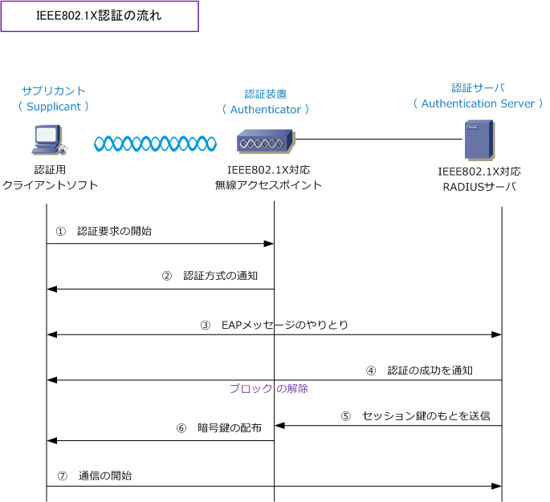

IEEE802.1X - Part 2
※ 以下の技術解説を読む前に「802.1X認証とは、EAPとは」でIEEE802.1X認証の基礎をご参考下さい。
IEEE802.1X - 認証の流れ
下図はサプリカントが802.1X認証を行い、ネットワーク接続できるようになるまでの流れを示しています。 ※ 認証方式によってシーケンスは異なります。また、?Dと?EはIEEE802.1X認証ではオプション機能です。

?@ 無線LANクライアント（サプリカント）は通信を開始するために、AP（認証装置）にプローブ信号 （プローブ要求）を送信します。このタイミングで無線LANクライアントが実行したい認証方式を要求。
?A APは無線LANクライアントから指定された認証方式を通知して、EAP処理を開始します。
?B 指定された認証方式に従い無線LANクライアントと認証サーバとの間でやりとりします。この時点 では、直接トラフィックをやりとりせずに、APが両者のトラフィックをプロトコル変換をしています。
?C 認証が成功すると認証サーバから認証が成功したことを通知。この時にポートのブロックが解除。
?D 認証サーバはアクセスポイントに対して、ユーザ用のセッション鍵のもとになる情報を送信します。
?E APは認証サーバから受信したセッション鍵の情報から暗号鍵を生成し、無線LANクライアントに配布。
?F 802.1X認証が無事に終えて、かつトラフィックを暗号化するための鍵を手に入れたので通信を開始。
IEEE802.1X/EAP - 認証方式の比較表
802.1X/EAP認証には色々な種類がありますが、実際によく使用されている方式はTLSとPEAPといえます。 MD5はサーバ認証が行わないので、クライアントが不正なサーバにアクセスしてしまう可能性があるだけで はなく、動的WEPにも対応していないのでセキュリティ的に非常に弱く導入企業を見たことがありません。 LEAPは辞書攻撃の脆弱性が発覚したことがありベンダーとして提案できません。LEAPの後継がEAP-FAST。
| 認証方式 | クライアント 認証 |
サーバ 認証 |
認証局 | 動的 WEP |
セキュリティ | 特徴 |
|---|---|---|---|---|---|---|
| MD5 | ユーザ名/ パスワード |
なし | 不要 | 不可 | × | ・ Windows PCで標準搭載 ・ チャレンジレスポンスによる認証 ・ サーバ認証なし、WEPキーは固定 |
| LEAP | ユーザ名/ パスワード |
ユーザ名/ パスワード |
不要 | 可 | △ | ・ Cisco独自の認証方式 ・ EAP-MD5よりもセキュリティが高い ・ 辞書攻撃による脆弱性が発覚 |
| EAP-FAST | ユーザ名/ パスワード |
ユーザ名/ パスワード |
不要 | 可 | ○ | ・ Cisco独自の認証方式 ・ 辞書攻撃による脆弱性を解消 ・ セキュリティレベルが高く認証局も不要 |
| TLS | 証明書 | 証明書 | 必要 | 可 | ◎ | ・ Windows PC で標準搭載 ・ 最もセキュリティレベルの高い方式 ・ 証明書発行などのスキルが要求される |
| TTLS | ユーザ名/ パスワード |
証明書 | 必要 | 可 | ○ | ・ 対応していないWindows製品がある ・ ユーザIDと証明書のハイブリッド認証 ・ TLSの拡張版 |
| PEAP | ユーザ名/ パスワード |
証明書 | 必要 | 可 | ○ | ・ Windows PCで標準搭載 ・ ユーザIDと証明書のハイブリッド認証 ・ 人気のある認証方式 |
クライアント認証で「ユーザ名/パスワード」ということは、Radiusサーバで認証を受ける際にユーザ名/パスワードを入力して認証を 受けることを意味します。また、クライアントもサーバが信頼できるサーバである事を確認する必要があります。サーバ認証で証明書 という事はCAが発行した証明書をサーバ、クライアントともにインストールをして、クライアント側ではその証明書を信頼する必要。
大企業で情報システム部の技術レベルが高く、従業員もITリテラシーが高い場合は、セキュリティレベル の高いTLSを導入するケースが多いですが、クライアント証明書の運用、管理に手間のかからないPEAPが
一般的に人気があります。TTLSはWindows XPの場合 サプリカントが有償とはいえOSの制限も少ないので、 不特定多数のクライアントが利用する公衆無線LANや、 大学内の無線LANサービスで利用されるケースがある。
また、CA（認証局）を導入する予算や運用力がないが IEEE802.1Xを導入することで現状よりセキュリティを 高めるという観点で、CA(認証局）の導入が必要のない EAP-FASTの実装を選択する企業もいらっしゃいます。
Microsoft 802.1X 認証クライアントに実装されているPEAPでは、サーバー認証とクライアント認証の両方に証明書を使用する PEAP-TLSと、サーバ認証に証明書を使用してクライアント認証にパスワードを使用するPEAP-MS-CHAPv2 をサポートします。